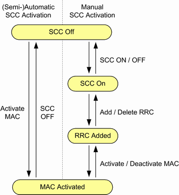

The state of each secondary component carrier (SCC) is displayed in the main view and described in the following table. An SCC can be used in downlink direction only, or in downlink plus uplink direction.
SCC state | Description |
|---|---|
"(SCC) Off" | No downlink signal transmission via the SCC frequency |
"(SCC) On" | An SCC downlink signal is transmitted, including synchronization signals, reference signal and system information. The UE is not yet informed about the SCC and ignores it. Prerequisite: Packet-switched state at least "Cell On" |
"RRC Added" | An "RRC Connection Reconfiguration" message has been sent to the UE via the PCC. The UE has acknowledged this message. In this state, the UE is informed about the presence of the SCC and knows important SCC properties like the carrier frequency. Prerequisite: RRC connection established on the PCC (packet-switched state "Attached" or "Connection Established", depending on parameter "Keep RRC Connection") |
"MAC Activated" | The SCC has been activated via a MAC message, sent to the UE via the PCC. The UE has acknowledged this message. After SCC activation, the SCC scheduling is started. The scheduling information is sent to the UE via the PDCCH of the SCC (cross-carrier scheduling is not used). |
- Manual activation means that you initiate each state transition step separately.
- Semiautomatic activation means that you initiate the complete SCC setup. So one action initiates all transitions from "SCC Off" to "MAC Activated".
- Automatic activation means that the RRC connection establishment triggers also the setup of the SCC. Depending on "Keep RRC Connection", the SCC setup is done with the attach or later on.
The following figure shows the transitions between the SCC states.

For selection of the mode, see "SCC Activation Mode".
You can control the state per SCC. Or you can define SCC synchronization sets and control the state per set, see "Multiple SCC Actions (hotkey)".
The list of transitions in Figure "SCC state transitions" is not complete. The "SCC Off" state can be reached at any time by releasing the RRC connection, for example by turning off the PCC cell signal. Incidents like a loss of the radio link also cause transitions. |